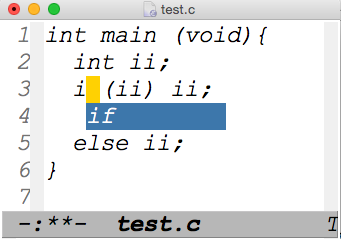

LR構文解析のエラー回復機能を用いたキーワード補完機能の系統的導出
このページでは、情報処理学会第109回プログラミング研究発表会で発表した論文
「LR構文解析のエラー回復機能を用いたキーワード補完機能の系統的導出」
で提示した方式で実装したキーワード補完システムのソースコードを公開しています。
使い方
keyword.tar.gz（2016年11月4日12:10、ソースコードの整理を行った）をダウンロードして展開し、READMEファイルに従ってコンパイル、実行してください。
スクリーンショット
